Análise dos dados de quedas de idosos, disponível no arquivo geriatra.dat da página do professor Gilberto de Paula e no pacote labestData.
Objetivo - analisar o efeito de duas diferentes intervenções na prevenção de quedas de idosos, ajustando o efeito de outras covariáveis.
Pacotes necessários
require(car)
require(lmtest)
require(effects)
require(statmod)
require(labestData)
require(hnp)
require(coefplot)
require(latticeExtra)Carregando os dados e análise descritiva.
geriatra <- PaulaEx4.6.5 # Leitura dos dados.
help(PaulaEx4.6.5)
names(geriatra) # Listando os nomes das variáveis## [1] "nquedas" "interv" "sexo" "balan" "forca"## nquedas interv sexo balan forca
## 1 1 EF F 45 70
## 2 1 EF F 62 66
## 3 2 EF M 43 64
## 4 0 EF M 76 48
## 5 2 EF F 51 72
## 6 1 EF M 73 39
## 7 0 EF M 40 54
## 8 0 EF F 66 37
## 9 2 EF M 80 81
## 10 2 EF M 56 60## nquedas interv sexo balan forca
## Min. : 0.00 E :50 F:47 Min. :13.0 Min. :18.0
## 1st Qu.: 1.00 EF:50 M:53 1st Qu.:39.0 1st Qu.:52.0
## Median : 3.00 Median :51.5 Median :60.0
## Mean : 3.04 Mean :52.8 Mean :60.8
## 3rd Qu.: 4.00 3rd Qu.:66.2 3rd Qu.:70.2
## Max. :11.00 Max. :98.0 Max. :90.0As próximas linhas de comandos declaram sexo e intervenção como fatores, e renomeiam seus níveis.
geriatra$interv <- factor(geriatra$interv)
geriatra$sexo <- factor(geriatra$sexo)
levels(geriatra$interv) <- c('Educ','Educ+Exerc')
levels(geriatra$sexo) <- c('Fem','Masc')Vamos calcular o número médio de quedas e a variância para os idosos separados por intervenção.
## Educ Educ+Exerc
## 4.52 1.56## Educ Educ+Exerc
## 5.765 1.762Gráficos para a distribuição de frequências para o número de quedas.
par(cex=1.4,las=1)
barplot(table(geriatra$nquedas),col='red',xlab='Número de quedas',ylab='Frequência')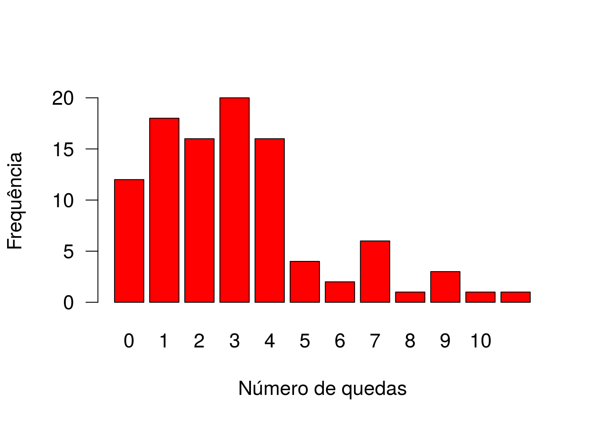
par(cex=1.2, las=1, mfrow=c(1,2))
barplot(table(geriatra$nquedas[which(geriatra$interv=='Educ')]),col='red',
xlab='Número de quedas',ylab='Frequência',xlim=c(0,12),main='Educação')
barplot(table(geriatra$nquedas[which(geriatra$interv=='Educ+Exerc')]),col='blue',
xlab='Número de quedas',ylab='Frequência',xlim=c(0,12),main='Educação + Exercícios')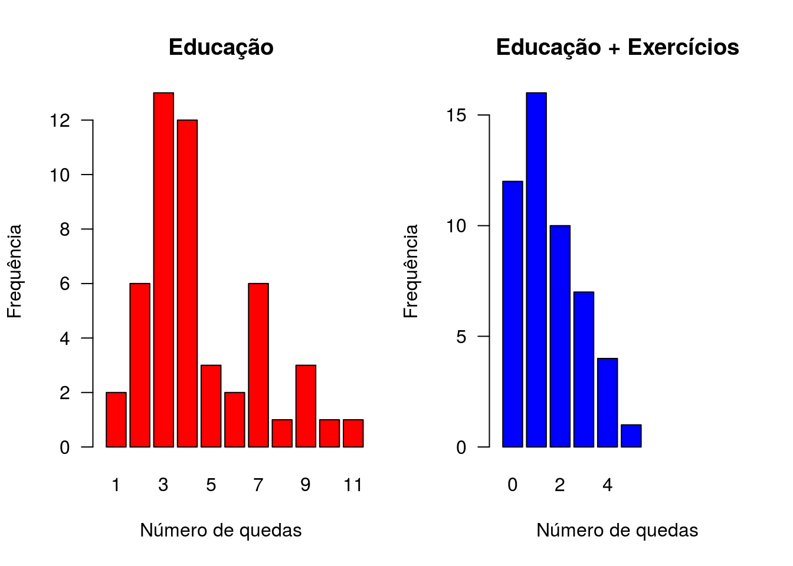
Antes de ajustar um glm, vamos ver como ficaria um modelo linear normal ajustado a este problema.
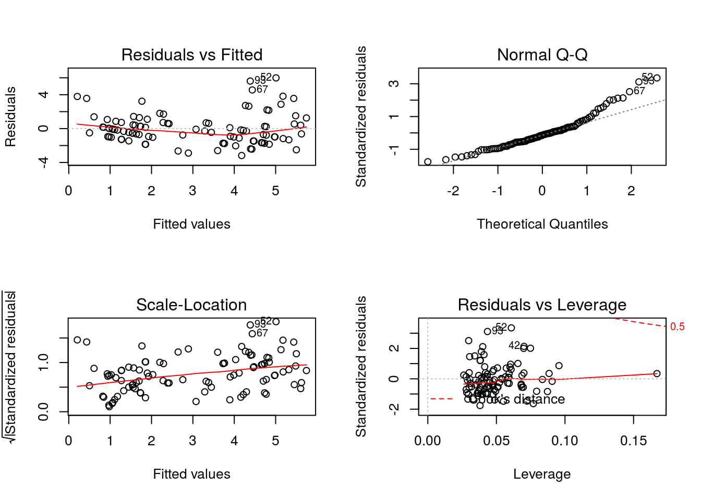
Repare, no gráfico do canto superior direito, a falta de normalidade dos resíduos e, no gráfico do canto inferior esquerdo, como a dispersão dos resíduos aumenta conforme a média, claro indicativo de que a variância dos erros não é constante.
Modelo com todas as covariáveis, sem interações.
##
## Call:
## glm(formula = nquedas ~ ., family = poisson, data = geriatra)
##
## Deviance Residuals:
## Min 1Q Median 3Q Max
## -2.185 -0.782 -0.256 0.545 2.362
##
## Coefficients:
## Estimate Std. Error z value Pr(>|z|)
## (Intercept) 0.48947 0.33687 1.45 0.1462
## intervEduc+Exerc -1.06940 0.13315 -8.03 9.6e-16 ***
## sexoMasc -0.04661 0.11997 -0.39 0.6977
## balan 0.00947 0.00295 3.21 0.0013 **
## forca 0.00857 0.00431 1.99 0.0470 *
## ---
## Signif. codes: 0 '***' 0.001 '**' 0.01 '*' 0.05 '.' 0.1 ' ' 1
##
## (Dispersion parameter for poisson family taken to be 1)
##
## Null deviance: 199.19 on 99 degrees of freedom
## Residual deviance: 108.79 on 95 degrees of freedom
## AIC: 377.3
##
## Number of Fisher Scoring iterations: 5Vamos verificar se alguma interação envolvendo o efeito de intervenção é necessária.
ajusteint1 <- update(ajuste, ~.+interv:balan)
ajusteint2 <- update(ajuste, ~.+interv:forca)
ajusteint3 <- update(ajuste, ~.+interv:sexo)
anova(ajuste, ajusteint1, test='Chisq')## Analysis of Deviance Table
##
## Model 1: nquedas ~ interv + sexo + balan + forca
## Model 2: nquedas ~ interv + sexo + balan + forca + interv:balan
## Resid. Df Resid. Dev Df Deviance Pr(>Chi)
## 1 95 109
## 2 94 107 1 1.37 0.24## Analysis of Deviance Table
##
## Model 1: nquedas ~ interv + sexo + balan + forca
## Model 2: nquedas ~ interv + sexo + balan + forca + interv:forca
## Resid. Df Resid. Dev Df Deviance Pr(>Chi)
## 1 95 109
## 2 94 109 1 0.0493 0.82## Analysis of Deviance Table
##
## Model 1: nquedas ~ interv + sexo + balan + forca
## Model 2: nquedas ~ interv + sexo + balan + forca + interv:sexo
## Resid. Df Resid. Dev Df Deviance Pr(>Chi)
## 1 95 109
## 2 94 109 1 0.0652 0.8O que vocês dizem?
Vamos investigar a necessidade de incluir o efeito quadrático das covariáveis numéricas.
ajustequad1 <- update(ajuste, ~. + I(balan**2))
ajustequad2 <- update(ajuste, ~. + I(forca**2))
anova(ajuste,ajustequad1,test='Chisq')## Analysis of Deviance Table
##
## Model 1: nquedas ~ interv + sexo + balan + forca
## Model 2: nquedas ~ interv + sexo + balan + forca + I(balan^2)
## Resid. Df Resid. Dev Df Deviance Pr(>Chi)
## 1 95 109
## 2 94 109 1 0.0793 0.78## Analysis of Deviance Table
##
## Model 1: nquedas ~ interv + sexo + balan + forca
## Model 2: nquedas ~ interv + sexo + balan + forca + I(forca^2)
## Resid. Df Resid. Dev Df Deviance Pr(>Chi)
## 1 95 109
## 2 94 108 1 1.26 0.26Não há necessidade de inclusão dos termos quadráticos.
Assim, vamos optar pelo modelo original, mas excluindo o efeito de sexo, que não se mostrou significativo.
##
## Call:
## glm(formula = nquedas ~ interv + balan + forca, family = poisson,
## data = geriatra)
##
## Deviance Residuals:
## Min 1Q Median 3Q Max
## -2.215 -0.751 -0.259 0.583 2.289
##
## Coefficients:
## Estimate Std. Error z value Pr(>|z|)
## (Intercept) 0.44389 0.31729 1.40 0.1618
## intervEduc+Exerc -1.07777 0.13142 -8.20 2.4e-16 ***
## balan 0.00947 0.00296 3.20 0.0014 **
## forca 0.00898 0.00419 2.14 0.0321 *
## ---
## Signif. codes: 0 '***' 0.001 '**' 0.01 '*' 0.05 '.' 0.1 ' ' 1
##
## (Dispersion parameter for poisson family taken to be 1)
##
## Null deviance: 199.19 on 99 degrees of freedom
## Residual deviance: 108.94 on 96 degrees of freedom
## AIC: 375.4
##
## Number of Fisher Scoring iterations: 5INTERPRETAÇÔES!!!
Gráficos padrão para a função glm
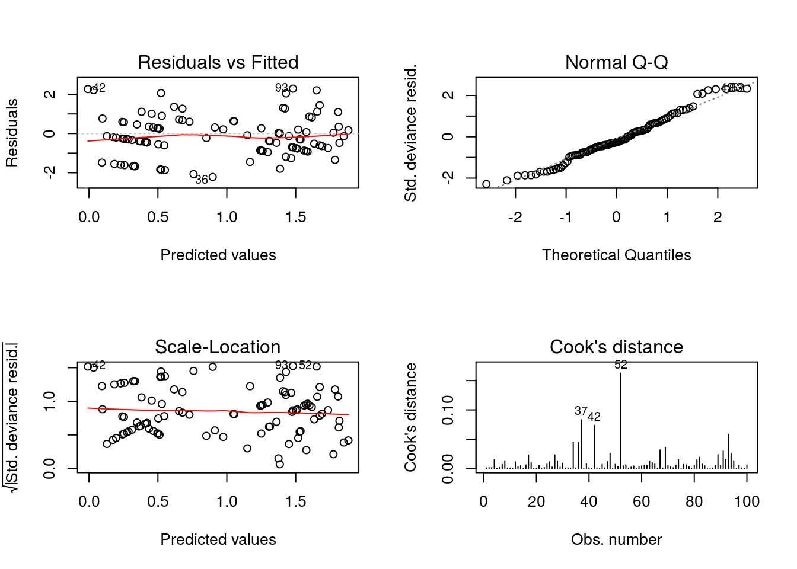
Não há indicativos sérios de falta de ajuste. Os resíduos têm variância aprox. constante, distribuição próxima da Normal, não parece haver outliers.
Gráfico dos resíduos da deviance com envelope simulado.
## Poisson model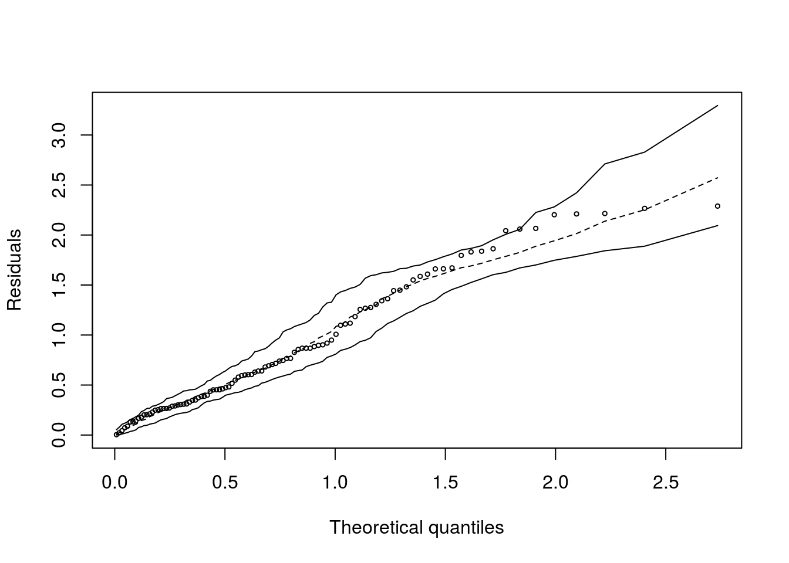
No geral, os pontos se distribuem no interior do envelope.
Análise dos resíduos quantílicos aleatorizados.
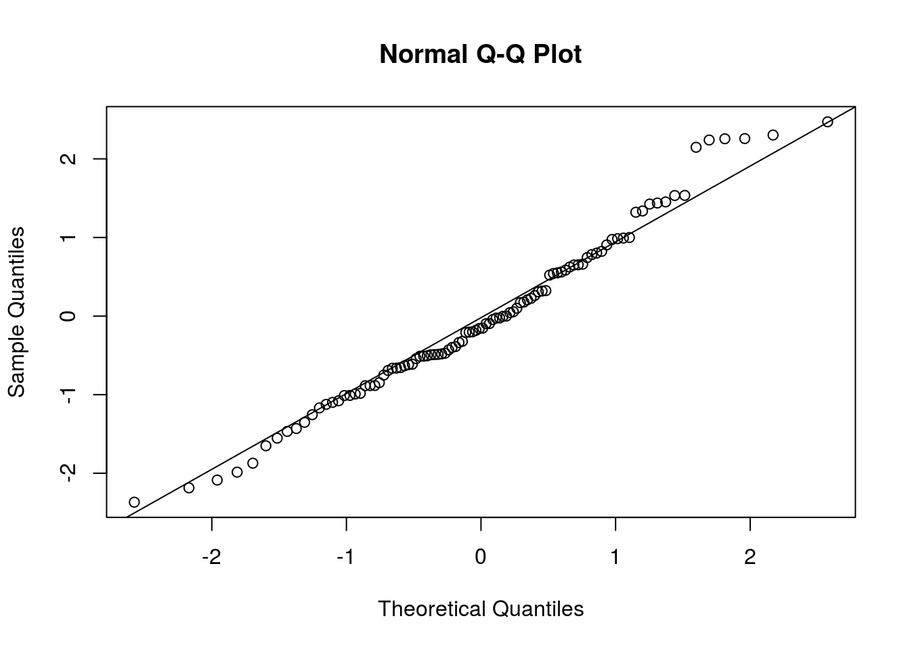
Aproximação satisfatória à distribuição Normal, ligeiro desajuste na cauda à direita.
##
## Shapiro-Wilk normality test
##
## data: resquant
## W = 0.98, p-value = 0.2Não se rejeita a hipótese de normalidade.
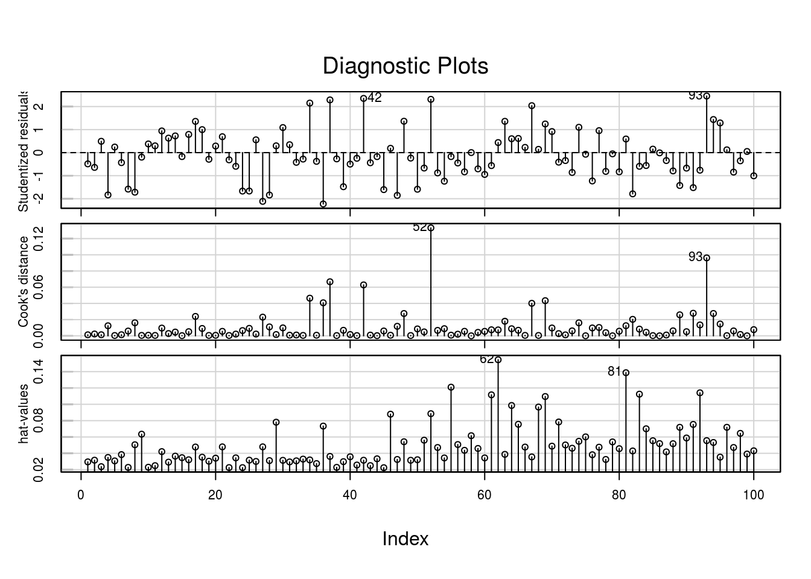
Vamos avaliar algumas observações destacadas no diagnóstico do modelo.
## nquedas interv sexo balan forca
## Min. : 0.00 Educ :50 Fem :47 Min. :13.0 Min. :18.0
## 1st Qu.: 1.00 Educ+Exerc:50 Masc:53 1st Qu.:39.0 1st Qu.:52.0
## Median : 3.00 Median :51.5 Median :60.0
## Mean : 3.04 Mean :52.8 Mean :60.8
## 3rd Qu.: 4.00 3rd Qu.:66.2 3rd Qu.:70.2
## Max. :11.00 Max. :98.0 Max. :90.0## nquedas interv sexo balan forca
## 52 11 Educ Fem 45 87
## 62 7 Educ Masc 98 49
## 93 10 Educ Masc 43 70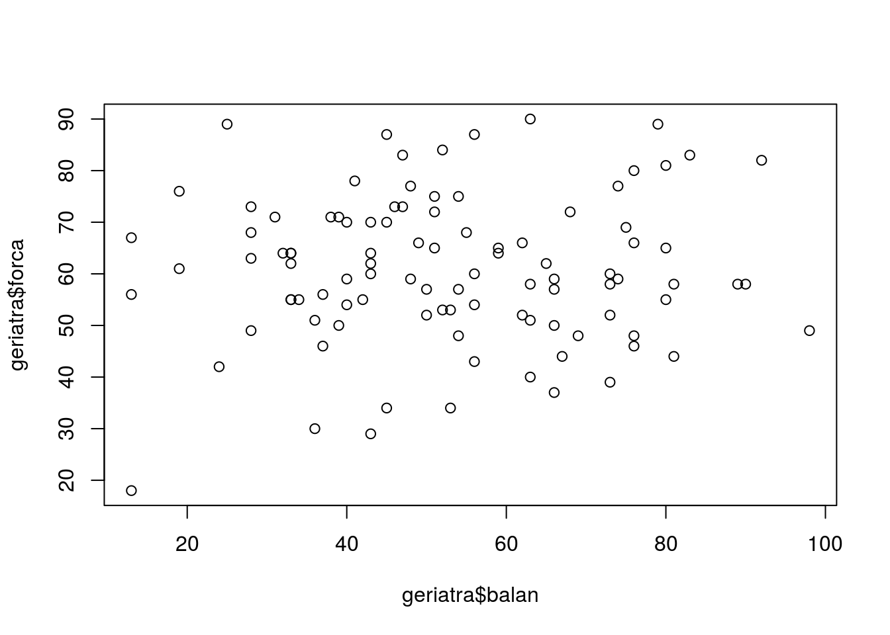
Os indivíduos 52 e 93 apresentaram os maiores números de quedas na amostra (11 e 10, respectivamente). O de número 62 se destaca pelo maior escore de balanço, com escore de força abaixo do 1º quartil.
Vamos reajustar o modelo sem esses indivíduos.
Atualizando o modelo, excluindo as três observações.
Vamos comparar os ajustes.
## Calls:
## 1: glm(formula = nquedas ~ interv + balan + forca, family = poisson,
## data = geriatra)
## 2: glm(formula = nquedas ~ interv + balan + forca, family = poisson,
## data = geriatra, subset = -c(52, 62, 93))
##
## Model 1 Model 2
## (Intercept) 0.444 0.550
## SE 0.317 0.324
##
## intervEduc+Exerc -1.078 -1.014
## SE 0.131 0.134
##
## balan 0.00947 0.01059
## SE 0.00296 0.00321
##
## forca 0.00898 0.00527
## SE 0.00419 0.00447
## 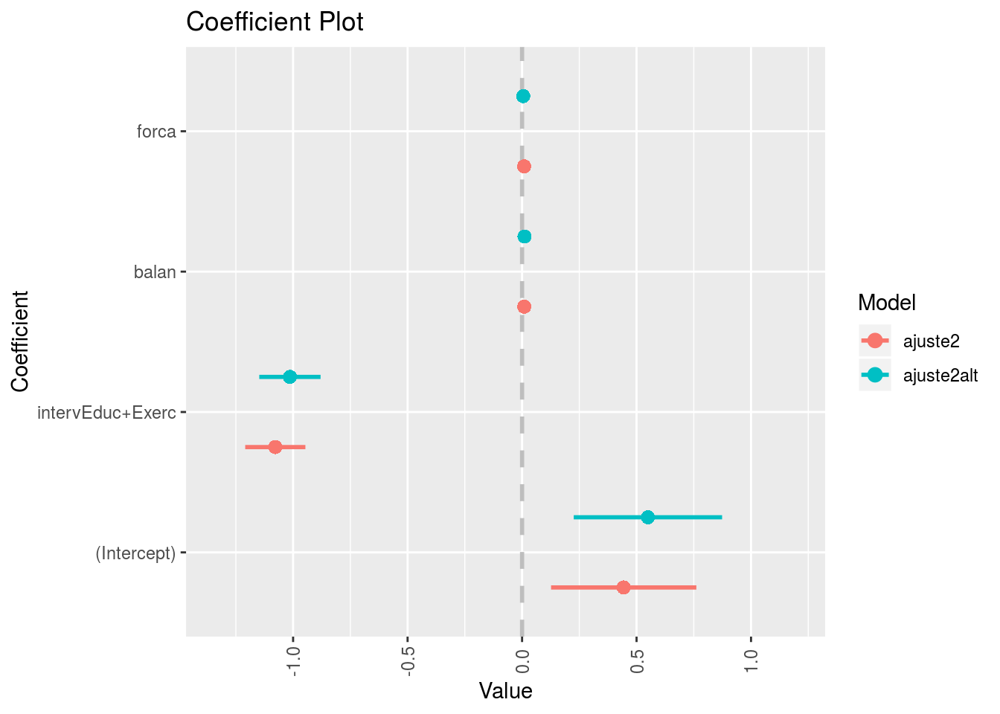
##
## Call:
## glm(formula = nquedas ~ interv + balan + forca, family = poisson,
## data = geriatra, subset = -c(52, 62, 93))
##
## Deviance Residuals:
## Min 1Q Median 3Q Max
## -2.165 -0.726 -0.220 0.487 2.298
##
## Coefficients:
## Estimate Std. Error z value Pr(>|z|)
## (Intercept) 0.54964 0.32397 1.70 0.08978 .
## intervEduc+Exerc -1.01394 0.13387 -7.57 3.6e-14 ***
## balan 0.01059 0.00321 3.30 0.00098 ***
## forca 0.00527 0.00447 1.18 0.23856
## ---
## Signif. codes: 0 '***' 0.001 '**' 0.01 '*' 0.05 '.' 0.1 ' ' 1
##
## (Dispersion parameter for poisson family taken to be 1)
##
## Null deviance: 171.934 on 96 degrees of freedom
## Residual deviance: 97.222 on 93 degrees of freedom
## AIC: 351.5
##
## Number of Fisher Scoring iterations: 5A única mudança substancial corresponde ao efeito do escore de força que, mediante exclusão das três observações, perde sua significância. O efeito da intervenção (e decorrentes conclusões) não são alteradas.
Vamos explorar um pouco mais os resultados.
## 2.5 % 97.5 %
## (Intercept) -0.1779846 1.06577
## intervEduc+Exerc -1.3353394 -0.82020
## balan 0.0036747 0.01527
## forca 0.0007679 0.01719## 2.5 % 97.5 %
## (Intercept) 0.8370 2.9031
## intervEduc+Exerc 0.2631 0.4403
## balan 1.0037 1.0154
## forca 1.0008 1.0173Intervalos de confiança baseados na normalidade assintótica dos estimadores.
## Waiting for profiling to be done...## 2.5 % 97.5 %
## (Intercept) -0.1871313 1.05603
## intervEduc+Exerc -1.3411097 -0.82520
## balan 0.0036752 0.01527
## forca 0.0007734 0.01720## Waiting for profiling to be done...## 2.5 % 97.5 %
## (Intercept) 0.8293 2.8749
## intervEduc+Exerc 0.2616 0.4381
## balan 1.0037 1.0154
## forca 1.0008 1.0173Intervalos de confiança baseados nos perfis da verossimilhança.
Explorando um pouco mais os efeitos das variáveis explicativas (consultar a documentação da função effect, pacote effects).
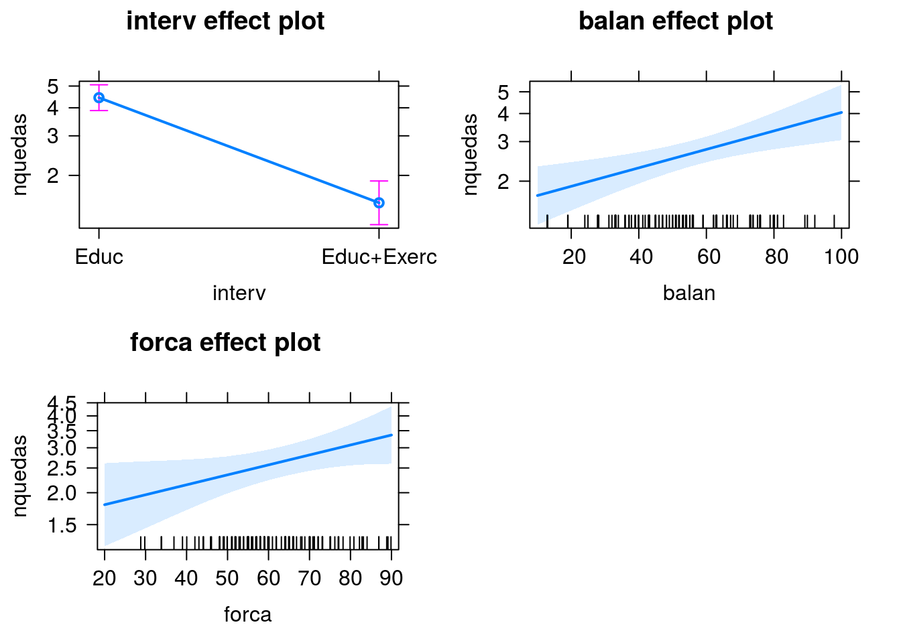
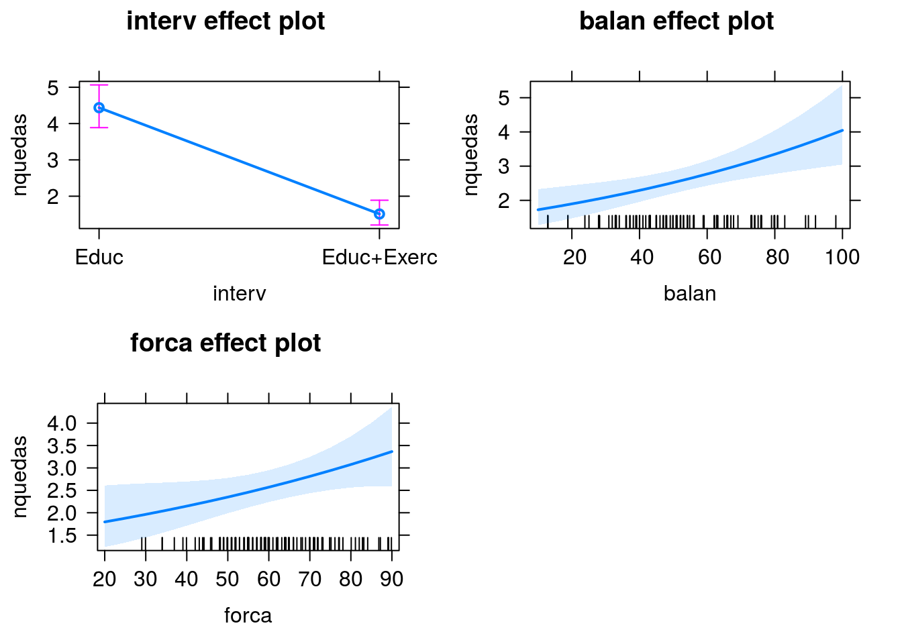
Um pouco de predição. Vamos estimar o número médio de quedas para indivíduos com dois perfis distintos, submetidos a cada uma das intervenções.
Perfil 1 - Balanço=30, força=50; Perfil 2- Balanço=70, força=80.
novosdados <- data.frame(interv=c('Educ','Educ+Exerc','Educ','Educ+Exerc'),
balan=c(30,30,50,50),
forca=c(70,70,80,80))
novosdados## interv balan forca
## 1 Educ 30 70
## 2 Educ+Exerc 30 70
## 3 Educ 50 80
## 4 Educ+Exerc 50 80## 1 2 3 4
## 3.883 1.322 5.133 1.747## interv balan forca estimativas
## 1 Educ 30 70 3.883
## 2 Educ+Exerc 30 70 1.322
## 3 Educ 50 80 5.133
## 4 Educ+Exerc 50 80 1.747Vamos olhar para as distribuições ajustadas para os números de quedas dois perfis, sob cada intervenção.
par(mfrow=c(2,2),cex=1,2)
plot(0:10,dpois(0:10,estimativas[1]),type='h',xlab='Número de quedas',
ylab='Probabilidade estimada',main='Perfil 1, Educ',lwd=2)
plot(0:10,dpois(0:10,estimativas[2]),type='h',xlab='Número de quedas',
ylab='Probabilidade estimada',main='Perfil 1, Educ + Exerc',lwd=2)
plot(0:10,dpois(0:10,estimativas[3]),type='h',xlab='Número de quedas',
ylab='Probabilidade estimada',main='Perfil 2, Educ',lwd=2)
plot(0:10,dpois(0:10,estimativas[4]),type='h',xlab='Número de quedas',
ylab='Probabilidade estimada',main='Perfil 2, Educ + Exerc',lwd=2)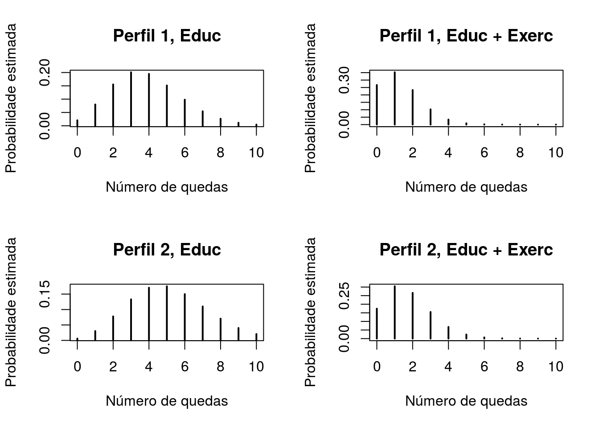
Vamos estimar, para cada perfil, a probabilidade de haver alguma queda no período
## [1] 0.9794## [1] 0.7333## [1] 0.9941## [1] 0.8257Vamos trabalhar um pouco com simulação Podemos utilizar simulação (bootstrap) como alternativa ao uso da teoria assintótica para avaliação dos erros das estimativas. Vamos usar a função Boot do pacote car.
Armazenamos em ajusteboot 999 os resultados dos R=999 ajustes do glm proposto para 999 re-amostras de tamanho n=100 geradas com reposição da base original.
##
## Number of bootstrap replications R = 999
## original bootBias bootSE bootMed
## (Intercept) 0.44389 -2.11e-02 0.31639 0.43468
## intervEduc+Exerc -1.07777 -3.47e-03 0.14121 -1.07635
## balan 0.00947 -2.02e-05 0.00288 0.00960
## forca 0.00898 2.56e-04 0.00449 0.00907Repare que as estimativas bootstrap (em bootMed) e os erros padrões (em bootSE) são bem similares às obtidas originalmente, baseadas na teoria assintótica. Além disso, o viés é bastante pequeno (desprezível).
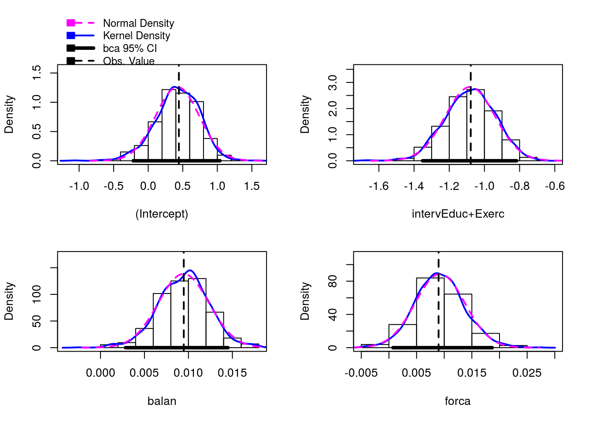
Podemos verificar que a distribuição dos estimadores, obtida via simulação, se aproxima bastante da distribuição Normal.
## Bootstrap bca confidence intervals
##
## 2.5 % 97.5 %
## (Intercept) -0.2172451 1.03802
## intervEduc+Exerc -1.3514232 -0.81707
## balan 0.0028504 0.01449
## forca 0.0007263 0.01869## Waiting for profiling to be done...## 2.5 % 97.5 %
## (Intercept) -0.1871313 1.05603
## intervEduc+Exerc -1.3411097 -0.82520
## balan 0.0036752 0.01527
## forca 0.0007734 0.01720Intervalos de confiança obtidos das duas formas são bastante próximos.
Exercício - testar a qualidade do ajuste com base nas estatísticas da deviance e X2 de Pearson.
Exercício - Obter intervalos de confiança (95%) para o número médio de quedas de idosos com os dois perfis apresentados.
Exercício - Avaliar o efeito das três observações destacadas no diagnóstico tirando uma a uma do ajuste do modelo e checar a alteração nos resultados.